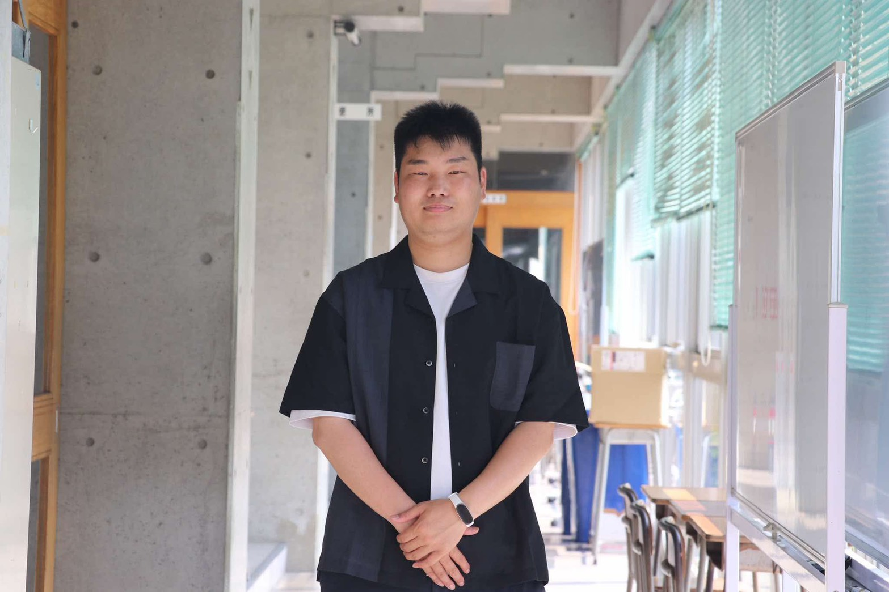

現場のリアルを5分で語る、3名の実践者たち

教育をアップデートしたのは、人とのつながりでした。私自身が「やってみよう」と思えた出会いと、その小さな一歩が教室を変えていった出来事をお話します。この5分が、誰かの「やってみよう」のきっかけになればうれしいです。
今年の4月27日、西条市の教員6名でNPO団体を立ち上げました。立ち上げの思いやこれからの展望のことについてお話させていただきます。参加者の皆さんの中で、何かが湧き上がるような時間になればと思います。
教育に関わる私たちは、誰かの人生を応援することは得意です。でも、自分の人生について考える時間は意外と少ないかもしれません。5分間だけ、自分の人生に問いを立てる時間を一緒につくれたら嬉しいです。